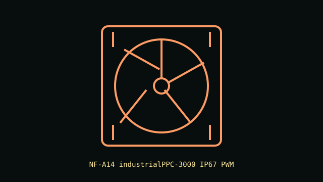

[ IDENTIFIED SKU // NF-A14 industrialPPC-3000 IP67 PWM ]
Noctua NF-A14 industrialPPC-3000 IP67 PWM
High-speed sealed 140 mm PWM industrial fan; the 3000 RPM IP67 variant is separate from the 3000 RPM non-IP67 model.

Recorded specifications
| Exact part | NF-A14 industrialPPC-3000 IP67 PWM (manufacturer model designation) |
|---|---|
| Frame / thickness | 140 × 140 × 25 mm |
| Speed / airflow / pressure / noise | 750–3000 RPM; up to 269.3 m³/h; 10.52 mm H₂O maximum static pressure; 41.3 dB(A). |
| Bearing | SSO2 self-stabilizing oil-pressure bearing |
| Electrical / control | 12 V DC; 0.55 A maximum input current; 4-pin PWM fan connector. |
| Case / radiator compatibility | Fits a 140 mm mount with 25 mm depth. The very high speed and noise require a controller/header rated for the current and a case/radiator installation rated for the fan's vibration and airflow. |
Installation notes
Use PWM control and verify startup and maximum-speed behavior in the host. The IP67-rated fan does not confer ingress protection on its connector or PC components.
Manufacturer sources
- Noctua product page — NF-A14 industrialPPC-3000 IP67 PWMManufacturer identification, IP67 variant, dimensions and rated performance.
- Noctua technical data sheet — NF-A14 industrialPPC-3000 IP67 PWMManufacturer specification sheet for this 3000 RPM variant.